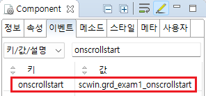

[GridView] Event - onscrollstart (세로 스크롤이 이동하여 최상단에 닿을 때 발생)
1개요
GridView의 'onscrollstart' 이벤트를 설정한 예제입니다. 이 이벤트는 세로 스크롤이 이동하여 최상단에 닿을 때 최초 1회 발생합니다.
'alwaysTriggerScrollStart' 속성을 'true'로 설정하면 스크롤이 최상단에 위치할 때 마다 'onscrollstart'이벤트가 발생합니다.
2구현된 기능
'onscrollstart' 이벤트 발생 시 로그 출력하기
3예제 테스트 방법
3.1'onscrollstart' 이벤트 발생 시 로그 출력하기
1
STEP 1: 초기 상태 확인하기
GridView에 세로 스크롤이 있습니다.
Image 1.브라우저(Chrome) 실행 예시

2
STEP 2: 세로 스크롤을 아래로 이동 시킵니다.
Image 2.브라우저(Chrome) 실행 예시 - 스크롤이 아래로 이동된 상태

3
STEP 3: 세로 스크롤을 최상단으로 이동 시킵니다.
Image 3.브라우저(Chrome) 실행 예시 - 스크롤이 최상단으로 이동된 상태

4
STEP 4: 실행 결과를 확인합니다.
세로 스크롤을 최상단 닿으면 'onscrollstart' 이벤트가 최초 1회 발생되고 이벤트 핸들러가 실행되어 로그가 출력됩니다.
예제 영역 '로그 확인' 또는 브라우저의 개발자 도구의 콘솔(console)탭에 출력된 로그를 확인합니다.
Example 1.Log
[11:30:53] ** scwin.grd_exam1_onscrollstart **
4구현 예시
4.1'onscrollstart' 이벤트의 핸들러 설정하기
1
STEP 1: GridView의 'onscrollstart' 이벤트 핸들러를 설정합니다.
예제 파일에서는 핸들러로 사용할 메소드명을 'scwin.grd_exam1_onscrollstart'로 설정하였습니다.
Image 4.웹스퀘어 스튜디오의 Component View - 이벤트 설정 예시

Example 2.Source-GridView
<w2:gridView ev:onscrollstart="scwin.grd_exam1_onscrollstart" id="grd_exam1"> <!-- 중략 --> </w2:gridView>
2
STEP 3: 'scwin.grd_exam1_onscrollstart' 메소드를 정의합니다.
Example 3.Script
//GridView grd_exam1의 onscrollstart 이벤트 핸들러 scwin.grd_exam1_onscrollstart = function () { //console에 log 출력 console.log("scwin.grd_exam1_onscrollstart"); };
5주요 API
onscrollstart
alwaysTriggerScrollStart
onscrollend